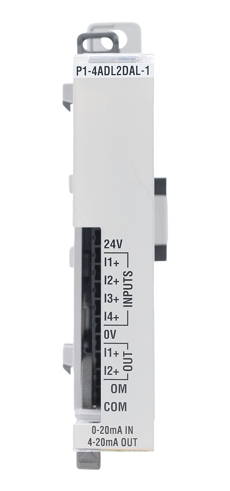

Input Functions
This module can read the current of four different input signals.
int inputCounts = P1.readAnalog(1, 2); //assign the value of channel 1 slot 2 returned by the readAnalog function to the variable inputCounts
float inputAmps = 20 * ((float)inputCounts / 8191); //converts the value of inputCounts to float with the units mAOutput Functions
This function sends the current to be output by the channel as an integer value in counts.
int outputCounts = 0; //variable outputCounts is the output value
P1.writeAnalog(outputCounts, 1, 2); // Writes to slot 1 channel 2 of the P1-04DAL-1 Compatible Functions
Module Configuration and Status Tables
We recommend using the status functions. This table is provided as additional reference.
Module Status Data
| Bytes | (MSB) 7 | 6 | 5 | 4 | 3 | 2 | 1 | 0 (LSB) | Description |
|---|---|---|---|---|---|---|---|---|---|
| Byte 0 | x | x | x | x | x | x | x | x | bits 0-7 are undefined |
| Byte 1 | x | x | x | x | x | x | x | x | bits 0-7 are undefined |
| Byte 2 | x | x | x | x | x | x | x | x | bits 0-7 are undefined |
| Byte 3 | x | x | x | x | x | x | 1 | 0 | bit 1 - Lost 24V error |
| bit 0 - Module diagnostics failure | |||||||||
| Byte 4 | x | x | x | x | x | x | x | x | bits 0-7 are undefined |
| Byte 5 | x | x | x | x | x | x | x | x | bits 0-7 are undefined |
| Byte 6 | x | x | x | x | x | x | x | x | bits 0-7 are undefined |
| Byte 7 | x | x | x | x | 3 | 2 | 1 | 0 | bit 3 - Under range error on channel 4 |
| bit 2 - Under range error on channel 3 | |||||||||
| bit 1 - Under range error on channel 2 | |||||||||
| bit 0 - Under range error on channel 1 | |||||||||
| Byte 8 | x | x | x | x | x | x | x | x | bits 0-7 are undefined |
| Byte 9 | x | x | x | x | x | x | x | x | bits 0-7 are undefined |
| Byte 10 | x | x | x | x | x | x | x | x | bits 0-7 are undefined |
| Byte 11 | x | x | x | x | 3 | 2 | 1 | 0 | bit 3 - Over range error on channel 4 |
| bit 2 - Over range error on channel 3 | |||||||||
| bit 1 - Over range error on channel 2 | |||||||||
| bit 0 - Over range error on channel 1 |

Channels: 4
Input Range: 0-20mA
Resolution: 13 bit (0-8191)
Channels: 2
Output Range: 4-20mA
Resolution: 12 bit (0-4095)
Example:
AnalogInput
AnalogOutput
Additional Resources:
Data Sheet
P1-4ADL2DAL-1
on AutomationDirect.com